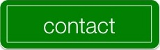

|  |

|
computer science . persuasive technology . design
|
My team implemented two selection gestures using the skeletal recognition and depth perception afforded by the Microsoft Kinect camera. Our application area of interest was the dance floor, and we created two gestures that both dancers and the DJ could use. We created real-life Kamehameha balls (from Dragon Ball Z ) so that dancers could vote for songs on the dance floor. We also had an interface with circles that detected the angle in which your hand is rotating so that the DJ can mix songs down below and adjust the lights at the same time--all with smooth motions. Check out more potential gestural selection mechanisms at our project page, here ! |
|
Using a modified version of the PageRank Algorithm developed my Google Larry Page and Sergei Brin to determine importance of web pages, Ben Shapero, Ben Lasley, and I were able to determine the winners of any given federal election (e.g., Congress and the U.S. President) with 80% accuracy. We calculated a support score for each candidate by translating donation amounts to support and propagating the support from individual donors and committee donors through the donation to individual candidates. We used data from OpenSecrets.org and used data from the 2008 and 2010 election cycles. The project overview in poster-format can be found here. The complete paper describing the data collection process, algorithm modification, and results can be found here. |
|
Modeled on Nielsen's 10 usability heuristics, Neema Moraveji and I used concrete characteristics of stress. Stressors feel unpredictable, evoke the perception of losing control, have the potential to cause harm or loss to one's self, or cause someone to feel judged (social evaluative threat). The heuristics presented are based on well-studied theories and empirical studies of evolutionary and psychosocial stress and thus serve as a useful tool in the design process.
|
|
Using Dr. BJ Fogg's Behavior Design methodology, I ran a two week behavior change pilot to see if I could encourage people to spend more time outside, an act which has tangible health benefits. By using that people are more likely to do something once they commit it to someone else, the lean startup methodology, and the text-messaging and Facebook platforms, I was able to increase the amount of participating Stanford students time spent outside by 50% on average. Participants were messaged every night, asking how much time s/he spent outside today and how much time s/he will spend the next day. The next day, the person was reminded, as were they reminded of a tally of how much time they spent outside so far during the trial. |
|
In this project, Justin Solomon, Haithem Turki, and I developed a prototype of a machine learning tool to help artists spend less time generating small-scale details. Using an artist’s initial strokes as training data, we train an automatic pen tool that places and shapes strokes with minimal guidance. Such a tool could be used to add detail to rough sketches or texture regions that would otherwise be frustrating to fill in. The paper describing the algorithm, application, and future work can be found here. |
|
Ringsense Presentation
View more presentations from Charlton Soesanto. |
RingSense was the result of a research project based on James Fogarty's work on interruption. We wanted to use contextual audio inputs to predict the appropriate sound level and time for a mobile phone ring. If any calendar or event name contains the words 'meeting,' 'class,' 'interview,' or 'appointment' or the plural representation of these words, RingSense automatically turns the phone to silent. Additionally, if the first characters of any calendar or event are defined by the regular expression 'X*Y*X' where X is any capital letter, and Y is any number, we assume the event is a class and automatically turn the phone to silent. Using ambient noise we also try to gauge when the user might be more amenable to interruptions. The paper describing the experimental design, application, and results can be found here. |
|
Before my foray into computer science, I learned the fundamentals of design in ME101: Visual Thinking. The highlight of the class was to come up with purely mechanical triggers keeping a log of all the prototypes up to the final design, of course. The task: build two machines. The result: Two machines, let's call them A and B, start next to each other.
|